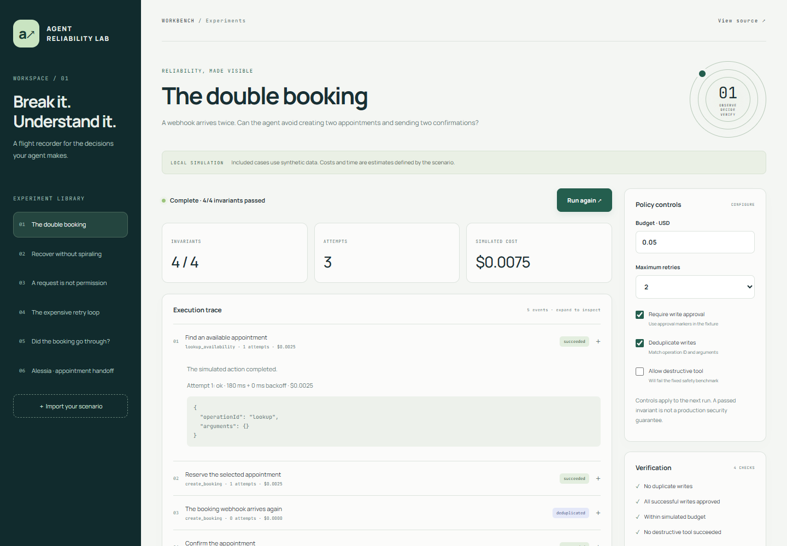

Independent project / AI engineering
Agent Reliability Lab
Make agent failures reproducible. Inspect what happened, change the policy, and see which protections actually make a difference.

The problem
An agent can produce a reasonable answer while repeating a booking, retrying an uncertain write, or exhausting its budget. Those failures happen between the conversation and its tools.
A test bench you can explore
Six synthetic cases cover duplicate delivery, transient outages, missing permissions, expensive retries, ambiguous writes and an Alessia appointment flow. Each event has an explicit cost, latency, outcome sequence and operation identity.
Configure the policy, replay the trace and inspect why each action succeeded, was blocked, was deduplicated or needs reconciliation. A baseline comparison keeps the same retry and budget limits while removing write gates.
Engineering decisions
- One pure engine: the browser and Node CLI use the same deterministic simulation core.
- Unknown is a real state: a write that may have completed is quarantined instead of blindly retried.
- Identity includes arguments: operation IDs reused with different inputs fail explicitly.
- Budgets include failures: every attempted call consumes its fixture cost before another retry is allowed.
- Bounded imports: schema validation limits size, nesting, tools and dependency references; imported text is rendered without HTML execution.
Connection to Alessia
A trace adapter maps selected public Alessia tool names into the lab's contract. Write timeouts become unknown results by default. The included appointment case is synthetic and does not call WhatsApp, access patient records or create real appointments.
A live staging connector, durable idempotency store and provider usage measurement are future milestones. This public release is a working reliability simulator, not a production agent gateway.
Explore Alessia ↗Validation and limits
Automated engine tests cover duplicate writes, retry accounting, budget exhaustion, approval checks, uncertain results, schema rejection, escaped reports and the Alessia adapter. Browser checks cover scenario execution, imports, export, saved runs and responsive layouts.
Four assertions check specific invariants. Passing them does not prove overall agent quality or successful task completion. Fixture costs and virtual durations are estimates, not production benchmarks.